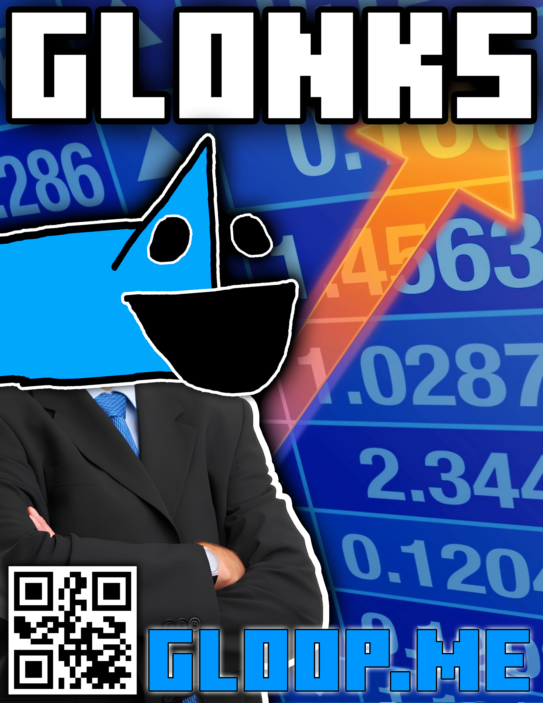

ALL GLOOP NEWS:
What's NEW: Gloop SOLVES Cancer
Gloop once again performs miracles, providing an insanely NOT Bleach god drink.
Supposedly proven to have cured 50,001 patients, with an astounding 99.9942168 success rate,
Gloop's unlabeled beverage that has NO ASSOCIATION with Clorox© has saved lives for millions.
In his GOOnn interview, Gloop remarks, "Gloop ble- drink kill cancer! Yum Yum Yum!"
MR. HOLMAN ENDORSES GLOOP
As Gloop has been busy on vacation on the Galoopacus Islands,
his campaign has caught the attention of massive political geniuses,
such as the likes of Elon Musk, and Mr. Holman!
In his interview, Gloop states, "Huh? No talk to Gloop before Gloop get morning gummy worm."
GLOOP UNCRASHES THE STOCK MARKET

Having destroyed world hunger and solved pollution, Gloop turned to one of few major things to still be broken:
the stock market.
Being an investor himself, Gloop was able to use the genius strategy of investing in himself to uncrash the stock market and bring us out of what would've gone down as "Great depression: the sequel."
When we asked Gloop how this possibly could've fixed the economy, he said "Shhhhhhh. Gloop sigma."
GLOOP SOLVES WORLD HUNGER
Gloop once again performs miracles, and this time he's solved world hunger?!
After discovering how animals get energy from eating plants,
Gloop realized that he could just feed himself to all the starving people!
I don't really get how he does it without just dying... but it's amazing!
In his interview, he states, "Gloop tasty like grass! Gloop eat like grass! Yum!"
If any man deserves to win the election, it's Gloop.
GLOOP BEGINS HIS RAP CAREER
As Gloop has been furthering his presidential career, he has decided to pick up the art of rap!?
Gloop raps under the name MF Gloop and has released his first song, "MoSTLY CAPS (Feat. Glorp)," an instant
hit, breaking every record for every song in all of history, hitting top of the charts 2 minutes before it
even released.
Gloop has since been challenged to a rap battle by his political opponent, "Lil' Bleep," who exclaims, "Oh
how pitiful! The young chap didn't even bother to get half decent audio quality! This is as rubbish as a
chocolate teapot..."
With how Gloop continues to commmit such miraculous acts, who knows what he will do next?
GLOOP FINDS THE SOLUTION TO POLUTION
As Gloop continues to win over the crowds in funding and polls, Gloop has found out how to solve
polution!?
Already he has completely healed the ozone layer, and recycled all the trash in every garbage dump
in the United States!
Gloop reveals his secret in his interview saying,
"Gloop make world more tasty! Slime soaks up all bad and make it yummy!"
While surprising, this has been incredibly effective and even brought back many extinct species,
hence the Glooposaur's existence.
GLOOP BETRAYED BY THE GLOOPOSAUR
As Gloop wins the polls in Nevada (yipee), he has been betrayed by the
Glooposaur!?
In a
shocking turn of events, Glooposaur
has decided to campaign with Bleep instead of support its creator.
In his interview Gloop weeps
out, "Gloop big sad. Gloop not imagine Glooposaurs be so dangerous. Gloop just want squiggle into
ground and stay. VOTE GLOOP 2024!!!" This sudden news is incredibly shocking, and raises important
questions, like "is it ok to date a Glooposaur?" Or maybe that's just me. 🥵